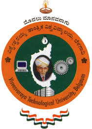
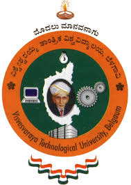

Manikandan R
Research EngineerResearch and Development Center, Hitachi India
Office: 7Th floor, WTC manikandan.ravikiran[at]gmail.com
Google Scholar | LinkedIn | CV
About me
Must write!!
Latest
Must Add!!Affiliations
|  |
Must write!!
|  |